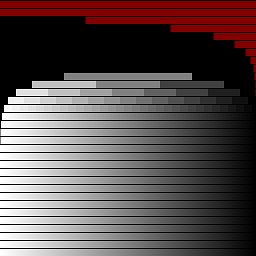
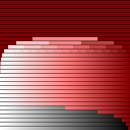

See relevant blog post:
A quick summary so you can interpret the results above follows. The fragment shader that produced the image can be seen below. It's a combination of the two Tom Olson's shaders. The number of bars (below those completely red ones) is the number of the bits in the fractional part of the floating point used by the GPU. The shape ("orca" or "beehive") indicates the rounding used ("beehive" GPUs use round-to-nearest, "orca" GPUs use less accurate round-to-zero). Finally, red region of the image points out whether or not GPU supports subnormals (those that do have only a small red region on top right). Shader code:
uniform vec2 invCanvasSize;
const int minexp = 120;
const int MAX_LOOPS = 152;
// Fractional precision and rounding
float x = 1.0 - gl_FragCoord.x*invCanvasSize.x;
float y = gl_FragCoord.y*invCanvasSize.y * 32.0;
float fade = fract(pow(2.0, floor(y)) + x);
vec4 color = vec4(fade);
// Denormals test
// Loop count must be fixed in WebGL, workaround
int row = minexp + int(floor(y));
for (int i = 0; i < MAX_LOOPS; i++) if (i < row) x /= 2.0;
for (int i = 0; i < MAX_LOOPS; i++) if (i < row) x *= 2.0;
if (x == 0.0)
color.x = clamp(color.x+0.5, 0.0, 1.0);
if (fract(y) < 0.9)
gl_FragColor = color;
else
gl_FragColor = vec4(0.0);
Example results. On the left is a CPU reference with complete IEEE-754, RNE and subnormals. The next
one is Radeon HD 3400 (single precision, RNE, but does not have subnormals).


Any errors?